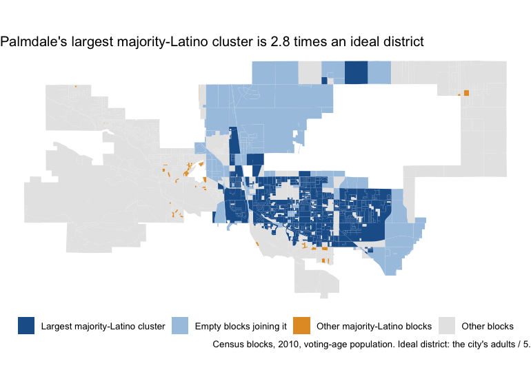

Latino concentration and the California Voting Rights Act
Source:vignettes/cvra-concentration.Rmd
cvra-concentration.RmdUnder the California Voting Rights Act, cities switched from at-large to district elections for their councils. A switch can only help Latino candidates where Latinos live close enough together to form a majority in a district. This vignette measures that concentration for five cities with 2010 census blocks.
The measures use the voting-age population (VAP). Courts look at citizen voting-age population, which the Census Bureau does not publish for blocks, so VAP is the closest block-level count.
Blocks
The package dataset ca_place_concentration lists every
California place, so it gives the five cities’ place codes.
cities <- paste(c("Palmdale", "West Covina", "Victorville", "Anaheim",
"Modesto"), "city, California")
places <- ca_place_concentration |>
filter(year == 2010, universe == "vap", place_name %in% cities) |>
transmute(place_geoid, city = sub(" city, California", "", place_name))
places
#> # A tibble: 5 × 2
#> place_geoid city
#> <chr> <chr>
#> 1 0602000 Anaheim
#> 2 0648354 Modesto
#> 3 0655156 Palmdale
#> 4 0682590 Victorville
#> 5 0684200 West Covinaseg_blocks() downloads block counts and polygons for the
four counties the cities lie in and assigns each block to its place.
blocks <- seg_blocks(
"CA", 2010, universe = "vap",
county = c("Los Angeles", "San Bernardino", "Orange", "Stanislaus")
) |>
filter(place_geoid %in% places$place_geoid)
nrow(blocks)
#> [1] 10685How concentrated are Latinos?
seg_measures() gives the Latino share, two standard
segregation measures (dissimilarity and isolation) and the share of
Latinos who live in majority-Latino blocks for each city. It also
returns exposure, which for two groups is 1 minus isolation, so the
table leaves it out.
measures <- seg_measures(blocks, by = place_geoid, group = latino,
total = total)
measures |>
left_join(places, by = "place_geoid", relationship = "one-to-one") |>
select(city, pop_total, group_share, dissimilarity, isolation,
majority_share)
#> # A tibble: 5 × 6
#> city pop_total group_share dissimilarity isolation majority_share
#> <chr> <dbl> <dbl> <dbl> <dbl> <dbl>
#> 1 Palmdale 102236 0.501 0.305 0.569 0.732
#> 2 West Covina 80023 0.486 0.260 0.539 0.620
#> 3 Victorville 77880 0.435 0.211 0.478 0.374
#> 4 Anaheim 244348 0.470 0.452 0.619 0.660
#> 5 Modesto 147153 0.304 0.339 0.422 0.323seg_clusters() finds contiguous clusters of
majority-Latino blocks and compares the largest with an ideal district
for a five-district council. largest_ratio above 1 means
the largest cluster alone could hold a majority-Latino district.
n_districts_floor adds up the whole districts every cluster
could hold; it is a rough guide, not a bound.
clusters <- seg_clusters(blocks, by = place_geoid, group = latino,
total = total, n_districts = 5)
clusters |>
left_join(places, by = "place_geoid", relationship = "one-to-one") |>
select(city, n_clusters, largest_pop, largest_share, largest_ratio,
n_viable, n_districts_floor)
#> # A tibble: 5 × 7
#> city n_clusters largest_pop largest_share largest_ratio n_viable n_districts_floor
#> <chr> <int> <dbl> <dbl> <dbl> <int> <dbl>
#> 1 Anaheim 70 86878 0.756 1.78 1 1
#> 2 Modesto 40 9603 0.692 0.326 0 0
#> 3 Palmdale 29 58141 0.633 2.84 1 2
#> 4 Victorville 70 15465 0.615 0.993 0 0
#> 5 West Covina 35 32275 0.618 2.02 1 2By default, blocks with no residents can join two clusters, because a district can include them at no cost in population. Leaving them out is a robustness check:
seg_clusters(blocks, by = place_geoid, group = latino, total = total,
n_districts = 5, bridge_empty = FALSE) |>
left_join(places, by = "place_geoid", relationship = "one-to-one") |>
select(city, largest_ratio, n_viable, n_districts_floor)
#> # A tibble: 5 × 4
#> city largest_ratio n_viable n_districts_floor
#> <chr> <dbl> <int> <dbl>
#> 1 Anaheim 0.971 0 0
#> 2 Modesto 0.283 0 0
#> 3 Palmdale 2.47 1 2
#> 4 Victorville 0.197 0 0
#> 5 West Covina 0.436 0 0A concentration index
To rank the cities against the rest of the state, the next step uses
ca_place_concentration, which holds the same measures for
every place. It keeps places with at least 20,000 adults in 2010 and
combines three indicators that rise as Latinos become easier to place in
majority districts: isolation, the share in majority-Latino blocks, and
the largest cluster relative to an ideal district.
indicators <- c("isolation", "majority_share", "largest_ratio")
large_places <- ca_place_concentration |>
filter(year == 2010, universe == "vap", pop_total >= 20000)
nrow(large_places)
#> [1] 279
index <- large_places |>
idx_normalize(all_of(indicators), method = "rank") |>
idx_combine(all_of(indicators), name = "concentration") |>
mutate(rank = rank(-concentration, ties.method = "min"))
index |>
inner_join(places, by = "place_geoid", relationship = "one-to-one") |>
select(city, all_of(indicators), concentration, rank)
#> # A tibble: 5 × 6
#> city isolation majority_share largest_ratio concentration rank
#> <chr> <dbl> <dbl> <dbl> <dbl> <int>
#> 1 Anaheim 0.802 0.788 0.781 0.790 58
#> 2 Modesto 0.547 0.536 0.496 0.526 133
#> 3 Palmdale 0.777 0.827 0.845 0.817 52
#> 4 Victorville 0.619 0.572 0.669 0.620 108
#> 5 West Covina 0.730 0.770 0.799 0.766 65The ranks depend on choices: how to normalize, how to weight, and
whether to average arithmetically or geometrically.
idx_sensitivity() redraws those choices many times and
reports each place’s median rank with a 90% interval.
sensitivity <- idx_sensitivity(
large_places,
cols = all_of(indicators),
id = place_geoid,
n_sims = 1000,
seed = 2010
)
sensitivity |>
inner_join(places, by = "place_geoid", relationship = "one-to-one") |>
select(city, median_rank, rank_lower, rank_upper)
#> # A tibble: 5 × 4
#> city median_rank rank_lower rank_upper
#> <chr> <dbl> <dbl> <dbl>
#> 1 Anaheim 58 57 61
#> 2 Modesto 135 129 140
#> 3 Palmdale 49 45 56
#> 4 Victorville 108 97 117
#> 5 West Covina 63 58 69.0Map: Palmdale
seg_cluster_blocks() labels each block with its cluster,
which shows where the largest cluster lies.
palmdale_id <- places$place_geoid[places$city == "Palmdale"]
palmdale <- blocks |>
filter(place_geoid == palmdale_id) |>
seg_cluster_blocks(by = place_geoid, group = latino, total = total) |>
mutate(type = case_when(
cluster %in% 1 & total > 0 ~ "Largest majority-Latino cluster",
cluster %in% 1 ~ "Empty blocks joining it",
total > 0 & latino > 0.5 * total ~ "Other majority-Latino blocks",
.default = "Other blocks"
))
ratio <- clusters$largest_ratio[clusters$place_geoid == palmdale_id]
ggplot(palmdale) +
geom_sf(aes(fill = type), color = NA) +
scale_fill_manual(
values = c("Largest majority-Latino cluster" = "#1f5f99",
"Empty blocks joining it" = "#a9c6e2",
"Other majority-Latino blocks" = "#e39b2d",
"Other blocks" = "#e6e6e6"),
breaks = c("Largest majority-Latino cluster", "Empty blocks joining it",
"Other majority-Latino blocks", "Other blocks"),
name = NULL
) +
labs(
title = sprintf(
"Palmdale's largest majority-Latino cluster is %.1f times an ideal district",
ratio
),
caption = paste("Census blocks, 2010, voting-age population.",
"Ideal district: the city's adults / 5.")
) +
theme_void() +
theme(legend.position = "bottom", plot.title.position = "plot")